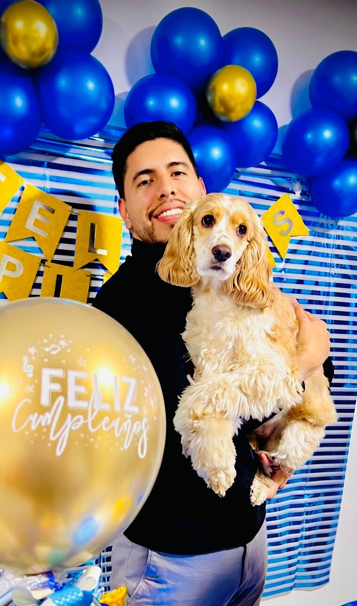
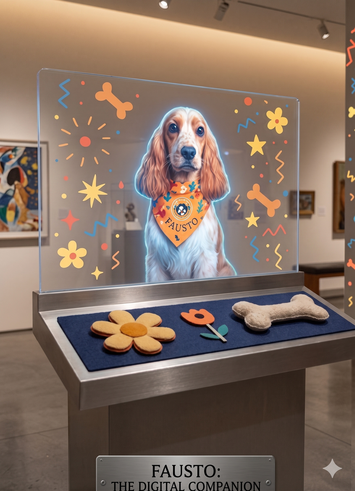

Fausto hoy, sano y acompañándonos. 💛
Para cada persona que estuvo ahí
Me tomo este espacio para agradecerles a todos ustedes: familiares, amigos, compañeros de trabajo, vecinos, y a cada persona que puso un granito de arena comprando una boleta para Fausto.
Muchos de ustedes han pasado por una situación similar. Saben, porque lo han vivido, lo duro que es ver a una mascota enferma. Entienden que estos compañeros de cuatro patas no son simplemente animales: son parte de nuestra vida, de nuestro día a día, de quiénes somos. Y cuando están en peligro, nosotros estamos en peligro.
Por eso, cuando vieron mi dolor, no fue desde la distancia. Fue desde el reconocimiento. Ustedes dijeron: «Yo sé exactamente lo que está sintiendo». Y desde ese lugar, actuaron. Eso es lo más valioso que alguien puede ofrecer: la comprensión de haber caminado el mismo camino.
Y hoy puedo decirles con el corazón en la mano: Fausto ya está mejor. Superó la etapa crítica. Va a seguir acompañándonos.
Recuerdo, en algún momento de mi vida, haber ayudado a otras personas que pasaban por situaciones difíciles. Lo hice porque sentía que debía hacerlo. Nunca pedí nada a cambio. Solo quería aliviar lo que podía en sus momentos más oscuros.
Y hoy, de una manera que solo la vida entiende, ese círculo se cerró. Ustedes se convirtieron en mis ángeles. Dios, o el universo, o la bondad que existe en el corazón humano —como quieran llamarlo— devolvió lo que yo había sembrado.
Esto es lo que he aprendido: el bien nunca se pierde. Se transforma. Se multiplica.
A todos ustedes les digo lo que la vida me enseña ahora: no esperen gratitud inmediata del mundo. No esperen que todos reconozcan sus actos. Solo esperen la paz profunda de saber que fueron ustedes mismos. Esperen que Dios, que ve todo, que ve cada acción desde el corazón, retribuya su bondad. Porque Él no se queda con nada. Y la vida tampoco.
Lo que ustedes sembraron en este momento de compasión volverá a ustedes, tal vez no de la forma que esperan, pero volverá multiplicado. Porque así funciona con quienes eligen ser buenos.
Cada vez que vea a Fausto, voy a recordarlos. Y voy a recordar que cuando más importaba, ustedes estuvieron ahí.
¡Tenemos ganadora!
Su Historia
Fausto llegó a casa siendo un cachorro travieso, lleno de energía y de esa ternura inconfundible de los Cocker. Con apenas 4 años y 7 meses, enfrentó el diagnóstico más duro que un perro pueda recibir: distemper canino.
El moquillo es una enfermedad viral feroz que ataca el sistema nervioso y respiratorio. No tiene cura directa, pero existió una esperanza concreta: el Canglob D, un suero de anticuerpos que actuó como el escudo que el cuerpo de Fausto no podía producir por sí solo.
Cada ampolla debía aplicarse cada 24 horas en el centro veterinario y, sumada a la hospitalización y la medicación complementaria, superaba lo que una familia puede asumir sola. Por eso nació esta rifa. Y por eso hoy escribimos un final feliz: tu apoyo no fue solo un número, fue la oportunidad de vida que Fausto necesitaba.
🐾 Recuperación confirmada · Fausto está en casa
Soporte de pago del premio
La confianza que depositaron merece total claridad. Aquí pueden validar la seriedad del sorteo: el premio de $500.000 COP ya fue consignado a la ganadora, Stefany Parra Mora. Este es el comprobante de la entrega.
Comprobante de consignación del premio a la ganadora.
¿A dónde fue tu aporte?
Fausto fue tratado en EMIVET Centro Veterinario (Fontibón, Bogotá) por la Dra. María Soledad Marroquín. La fórmula médica del 12 de mayo prescribió la aplicación subcutánea de 5.2 ml de Canglob D cada 24 horas durante 4 días, junto con Vitamina E para soporte inmunológico. Cada aporte se destinó a este tratamiento.
Puedes consultar la fórmula médica oficial como respaldo:
Descargar Fórmula PDF
Gracias por ser parte de esta historia. 🐾